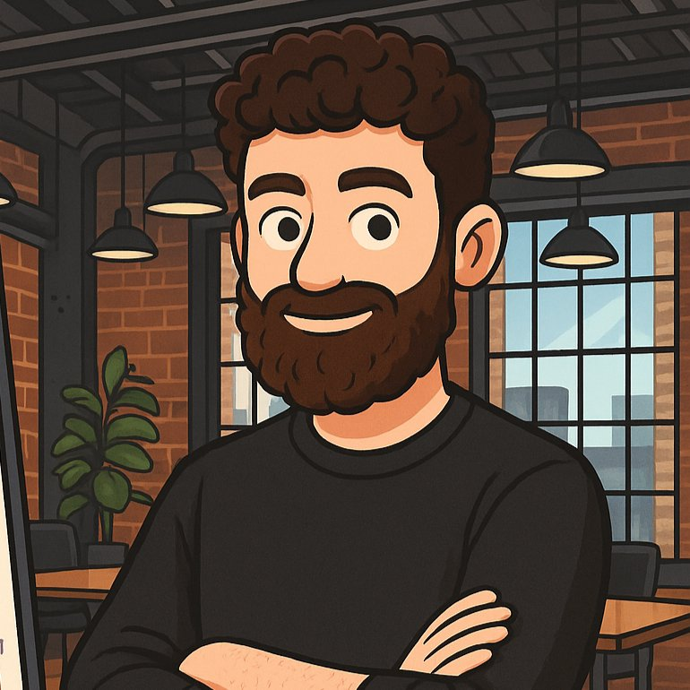

Ho costruito e lanciato prodotti AI in 4 mercati internazionali, guidato venture in programmi top-tier e lavorato come PM su progetti enterprise. UpVentures nasce dall’esperienza diretta: so cosa significa costruire qualcosa da zero, con risorse limitate e la pressione del mercato.